1. はじめて開くとき
- 自分の名前を選んで「この名前で入る」を押します。
- 川端さん・舟田さん・向さんの画面は、全部の情報が見られるので暗証番号が必要です。最初に開いたとき、4〜12けたの数字を2回入れて決めてください。次からはその番号で開きます。
- 暗証番号は、使う端末（パソコン・スマホ）ごとに決めます。
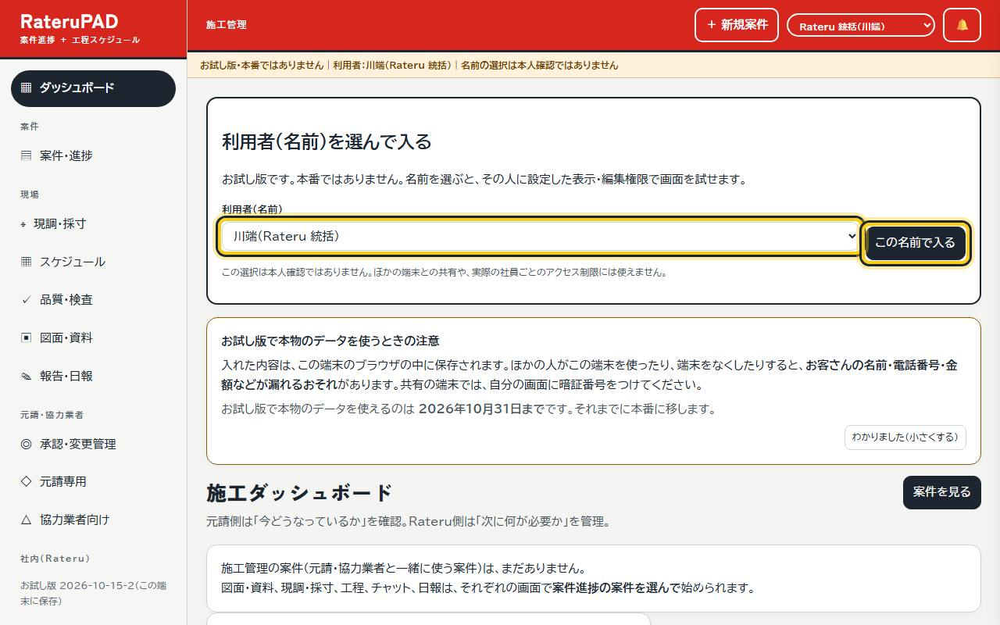
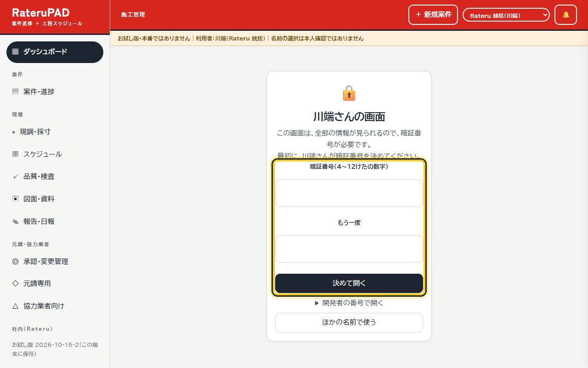
2. 気をつけること
- 入れた内容は、その端末のブラウザの中に保存されます。ほかの人がその端末を使ったり、端末をなくしたりすると、お客さんの名前・電話番号・金額などが漏れるおそれがあります。
- お試し版で本物のデータを使えるのは、ホームに書いてある期限までです。
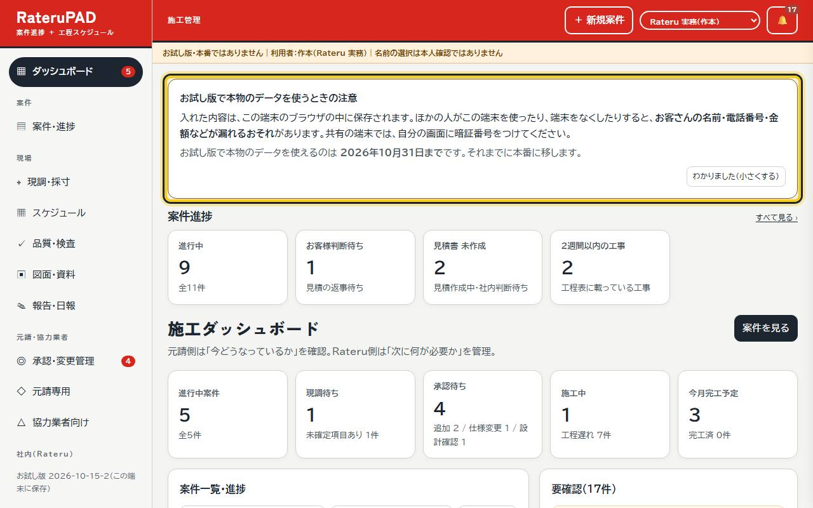
3. 案件進捗
- 「案件・進捗」で、案件が並びます。案件の行を押すと、くわしい内容と、その案件につながっている見積・売上・会議資料が出ます。
- 開いた画面の「この案件につながっているもの」のボタンから、見積書や図面・資料を始められます。
- 上の「＋」で新しい案件を足すと、保存したあとその案件の画面がそのまま開きます。売上責任者には、足した人（川端さん・井上さん・作本さん・児玉さん）が最初から入っています。
- スマホでは、案件が1件ずつのカードで並びます。
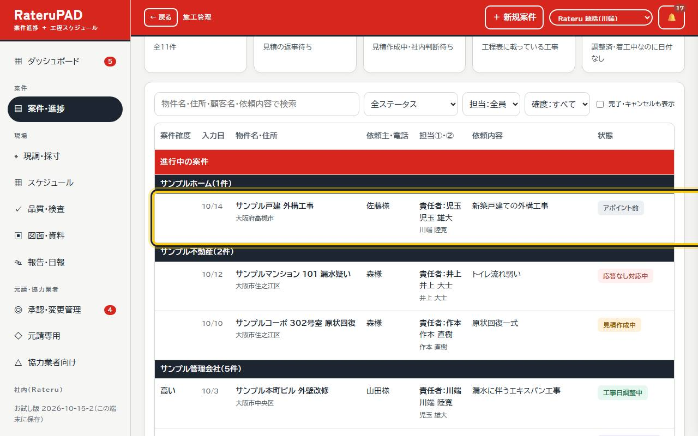
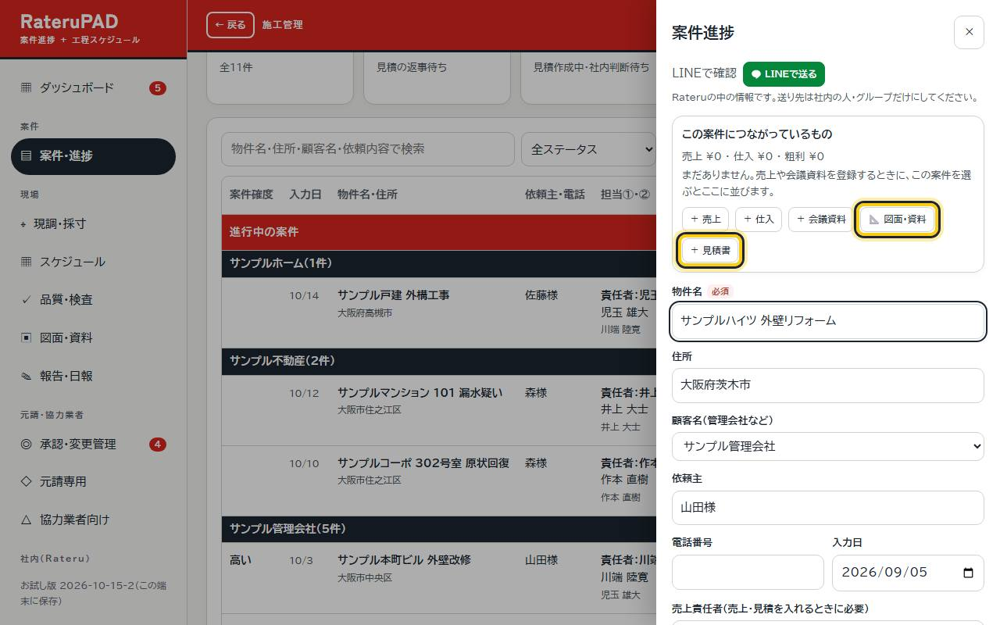
4. 単価の一覧を入れる（最初に1回）
- 社内で配られた単価の一覧のファイルを、端末に保存しておきます。
- 「見積・契約・請求」→「品目の一覧」→「品目の一覧を読み込む」で、そのファイルを選びます。
- 品目と単価が入り、見積で品目を選ぶと単価が自動で入ります。単価は「編集」で直せます。
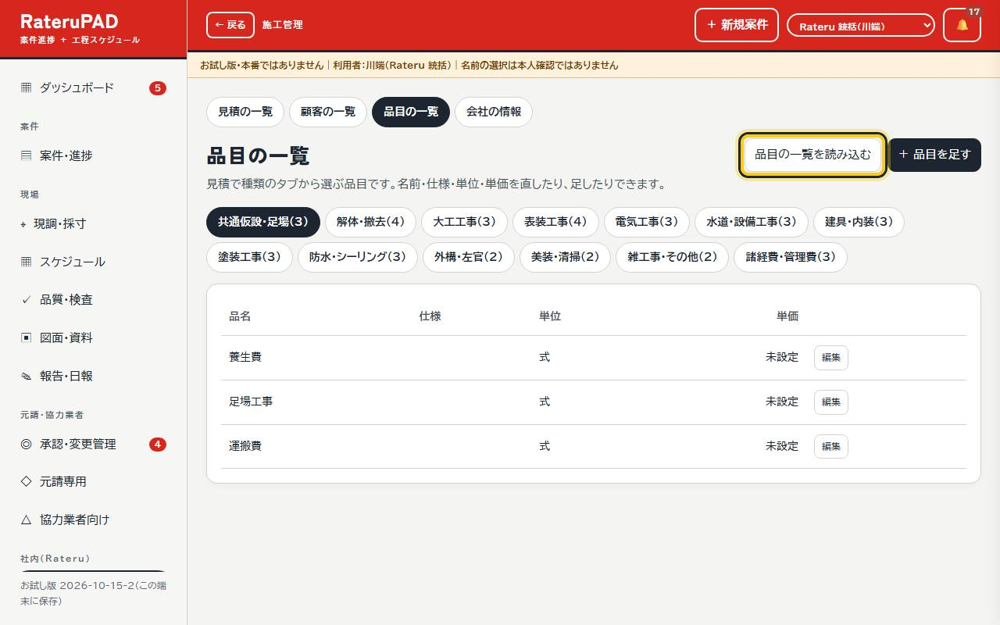
5. 見積を作る・直す
- 案件のカードの「＋ 見積書」、または「見積・契約・請求」の「＋ 見積書を作る」から始めます。
- 上の種類のタブから品目を押すと、明細に入ります。数量・単価はその場で直せます。
- 「保存」を押します。
- あとで直すときは「見積の一覧」から開いて、直して「保存」します（提出済・受注にしたあとでも直せます）。
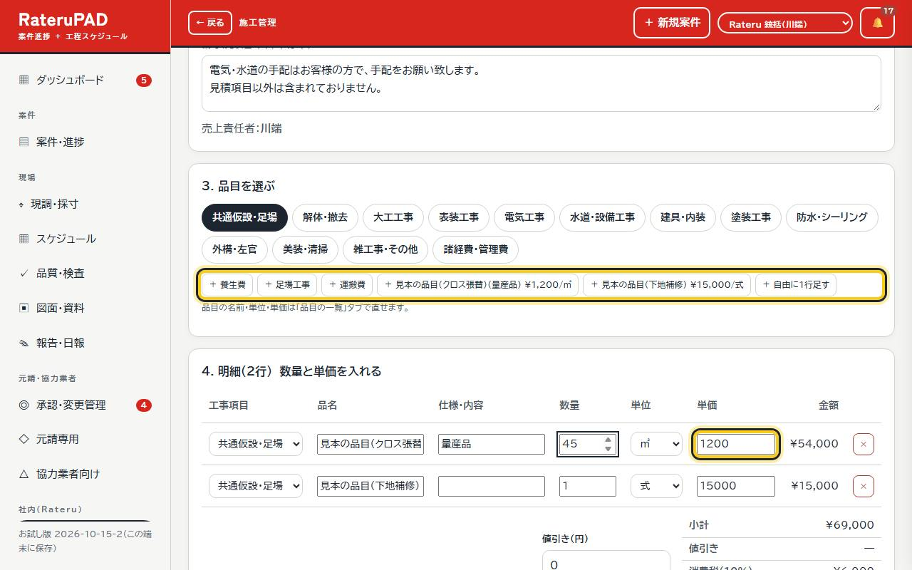
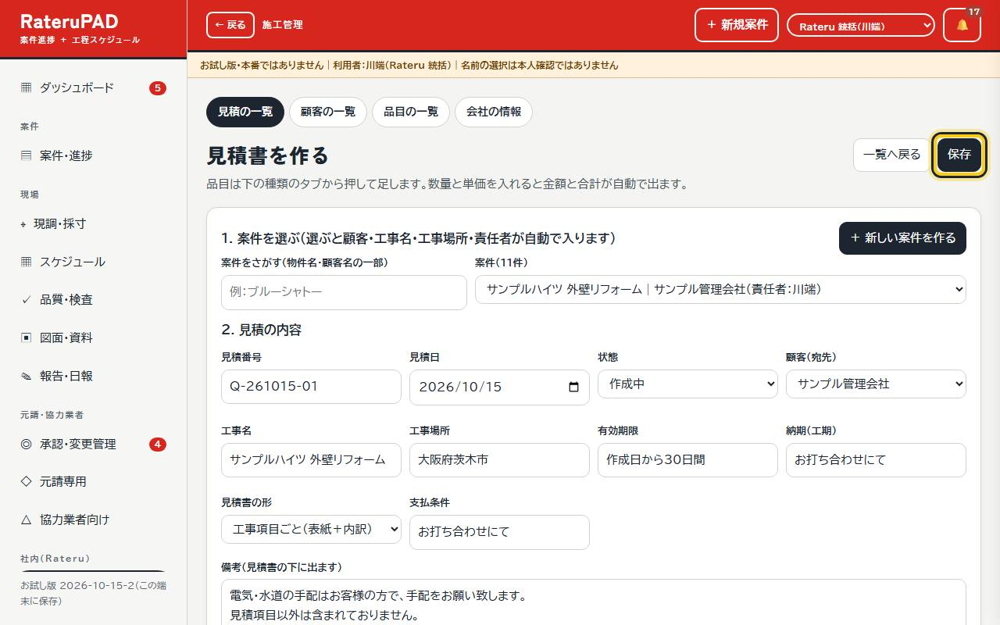
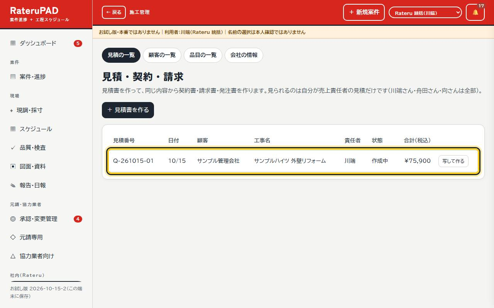
6. 請求書・発注書
- 見積を開いて「請求書を作る」。売上管理にも登録されます。
- 作った請求書は、横の「直す」で、金額・日付などを直せます（売上管理の登録も一緒に直ります）。
- 発注書（業者へ）は、川端さん・舟田さん・向さんが作れます。こちらも「直す」があります。
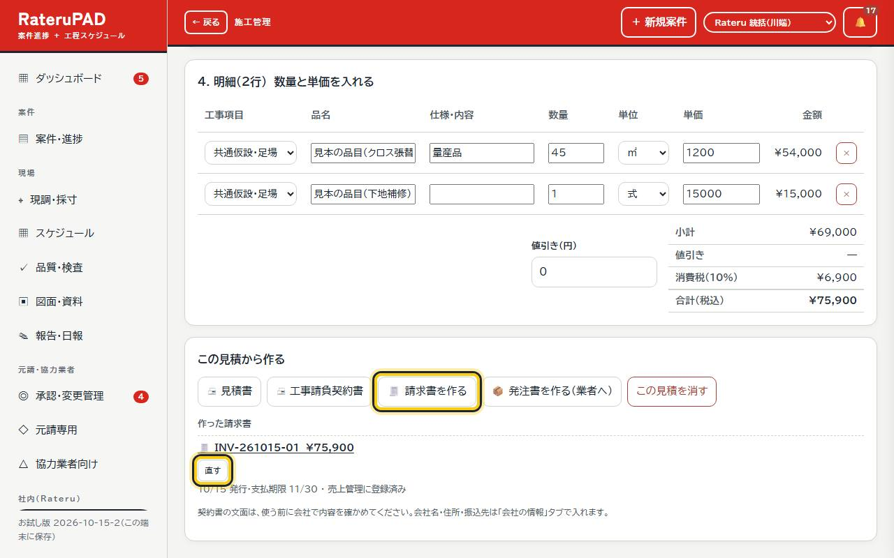
7. 図面・資料を入れる
- 「図面・資料」を開き、「案件進捗の案件に図面・資料を入れる」で案件を選んで「この案件の図面・資料を開く」を押します。
- 「＋ 資料を追加」から図面やPDFを入れます。新しい版を入れると、古い版は使わない扱いになります。
- 案件のカードの「📐 図面・資料」からも開けます。
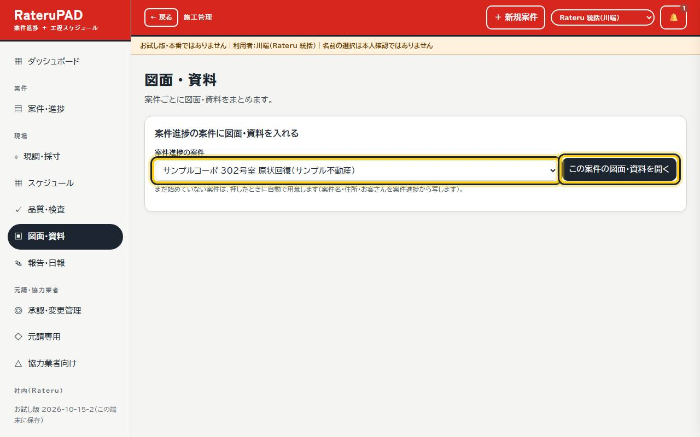
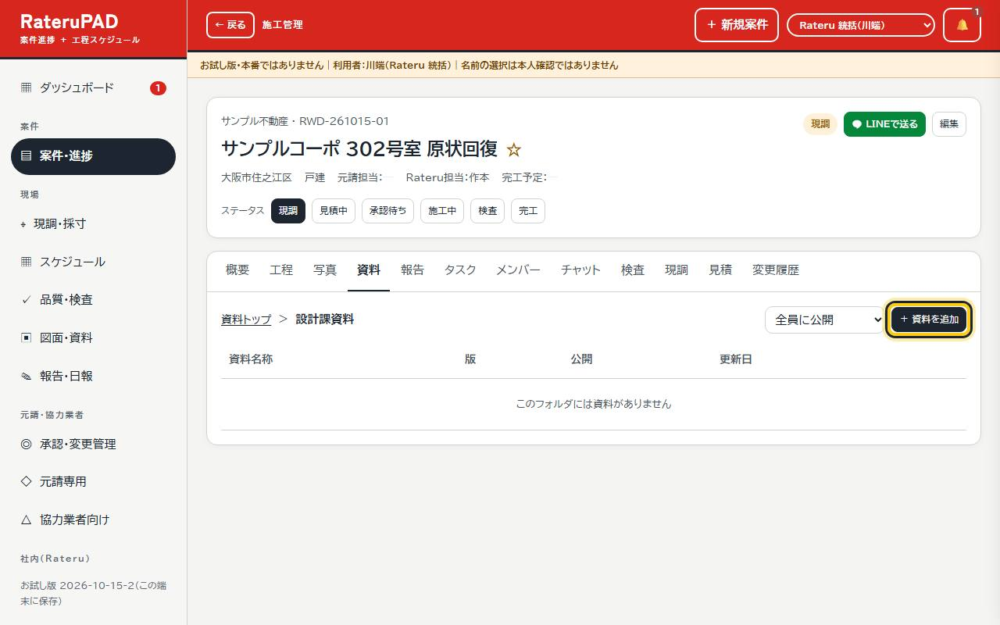
8. 入れたものを直す
- 日報・お知らせ・タスク・是正・見積・申請・社内メモ・資料の名前・チャットには、「直す」ボタンがあります。
- チャットは自分の発言だけ、申請・依頼は決まる前だけ直せます。直したことは記録に残ります。
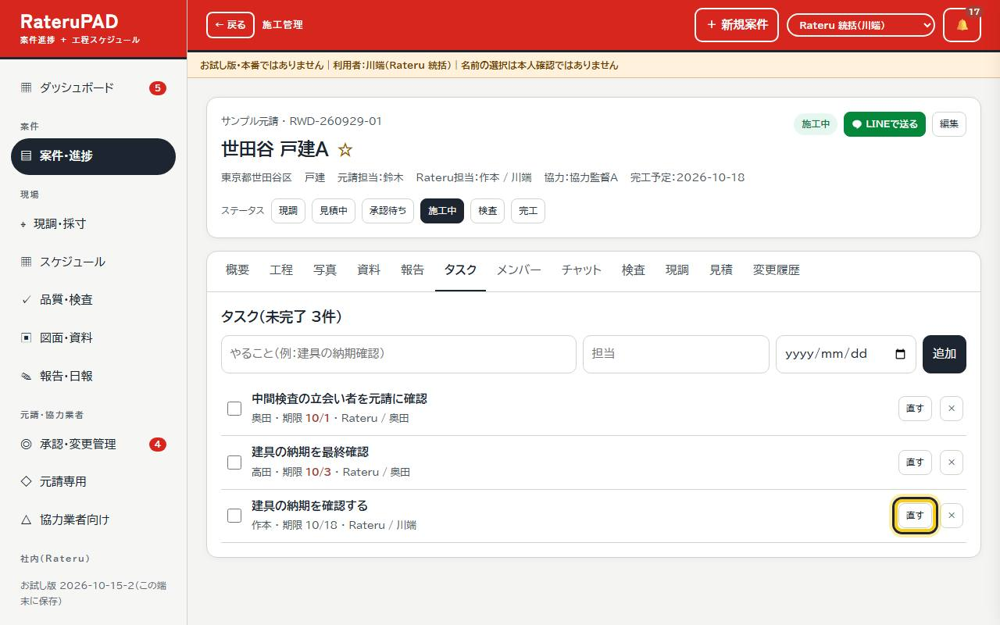
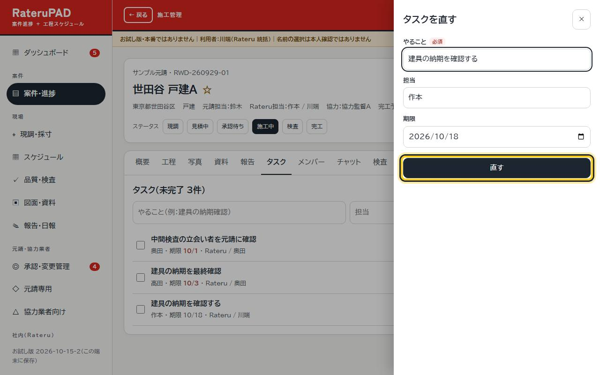
9. スマホで使う
- 左上の「☰」でメニューが開きます。
- 見積の明細は、スマホでは1行が1枚のカードになります。単価・数量はそのまま入れられます。
- 日報を書くときに写真も一緒に入れられます（何枚でも。案件の写真の「施工中」にも入ります）。
- iPhone は Safari で開いて「共有」→「ホーム画面に追加」すると、アプリのように開けます。
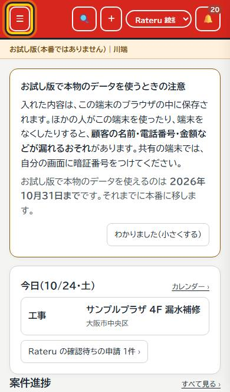
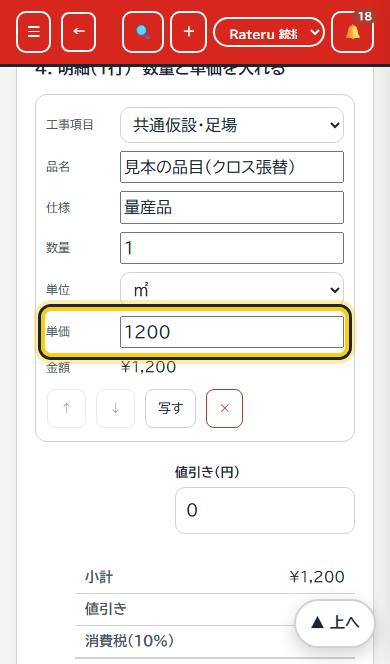